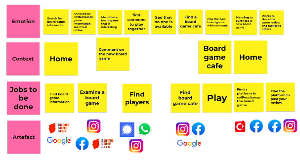
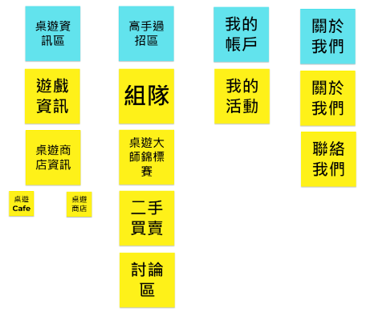

Assignment 4
The problem statement of my website is defined as How might we help board game addicts in Hong Kong who wants to improve their board game skills also save money while purchasing board games to address the problem of not having a one-stop source of information of different kinds of board games and shops to achieve the goal of mastering different kinds of board games at the lowest cost.
I would like to build a business community connecting the board game addicts and board game shops in Hong Kong. The website that I am creating is like a board game hub for Hong Kong board game players (like a Board Game version of Open Rice). Also, to promote some small board game shops as the details of the shops that sell board games are fragmented currently. The website will include the following functions to make this website sustainable in the long run:
A usability test is conducted to understand if the website can serve the purposes of the above functions and to understand their behavior when navigating the site and to perform a few tasks. The goal is to identify the problems in the design of the website and improve according to the comments received.
You may refer to the revised Journey Map and Sorting Cards below for more information:
Revised Journey Map
Sorting Cards
